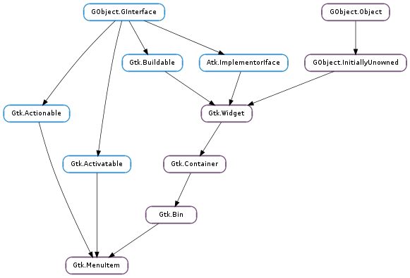

| Subclasses: | Gtk.CheckMenuItem, Gtk.ImageMenuItem, Gtk.SeparatorMenuItem, Gtk.TearoffMenuItem |
|---|
| static | new() |
| static | new_with_label(label) |
| static | new_with_mnemonic(label) |
| activate() | |
| deselect() | |
| get_accel_path() | |
| get_label() | |
| get_reserve_indicator() | |
| get_right_justified() | |
| get_submenu() | |
| get_use_underline() | |
| select() | |
| set_accel_path(accel_path) | |
| set_label(label) | |
| set_reserve_indicator(reserve) | |
| set_right_justified(right_justified) | |
| set_submenu(submenu) | |
| set_use_underline(setting) | |
| toggle_size_allocate(allocation) | |
| toggle_size_request(requisition) |
| Name | Type | Flags | Description |
|---|---|---|---|
| accel-path | str | r/w | Sets the accelerator path of the menu item |
| label | str | r/w | The text for the child label |
| right-justified | bool | r/w | Sets whether the menu item appears justified at the right side of a menu bar |
| submenu | Gtk.Menu | r/w | The submenu attached to the menu item, or None if it has none |
| use-underline | bool | r/w | If set, an underline in the text indicates the next character should be used for the mnemonic accelerator key |
| Name | Parameters | Return | Description |
|---|---|---|---|
| activate | Emitted when the item is activated. | ||
| activate-item | Emitted when the item is activated, but also if the menu item has a submenu. For normal applications, the relevant signal is Gtk.MenuItem ::activate. | ||
| deselect | Emits the Gtk.MenuItem ::deselect signal on the given item. Behaves exactly like #gtk_item_deselect. | ||
| select | Emits the Gtk.MenuItem ::select signal on the given item. Behaves exactly like #gtk_item_select. | ||
| toggle-size-allocate | int | ||
| toggle-size-request | int |
Bases: Gtk.Bin, Gtk.Actionable, Gtk.Activatable
The Gtk.MenuItem widget and the derived widgets are the only valid children for menus. Their function is to correctly handle highlighting, alignment, events and submenus.
As a Gtk.MenuItem derives from Gtk.Bin it can hold any valid child widget, although only a few are really useful.
By default, a Gtk.MenuItem sets a Gtk.AccelLabel as its child. Gtk.MenuItem has direct functions to set the label and its mnemonic. For more advanced label settings, you can fetch the child widget from the Gtk.Bin.
Setting markup and accelerator on a MenuItem
GtkWidget *child = gtk_bin_get_child (GTK_BIN (menu_item));
gtk_label_set_markup (GTK_LABEL (child), "<i>new label</i> with <b>markup</b>");
gtk_accel_label_set_accel (GTK_ACCEL_LABEL (child), GDK_KEY_1, 0);
Gtk.MenuItem as Gtk.Buildable The Gtk.MenuItem implementation of the Gtk.Buildable interface supports adding a submenu by specifying “submenu” as the “type” attribute of a <child> element.
A UI definition fragment with submenus
<object class="GtkMenuItem">
<child type="submenu">
<object class="GtkMenu" />
</child>
</object>
| Returns: | the newly created Gtk.MenuItem |
|---|---|
| Return type: | Gtk.Widget |
Creates a new Gtk.MenuItem.
| Parameters: | label (str) – the text for the label |
|---|---|
| Returns: | the newly created Gtk.MenuItem |
| Return type: | Gtk.Widget |
Creates a new Gtk.MenuItem whose child is a Gtk.Label.
| Parameters: | label (str) – The text of the button, with an underscore in front of the mnemonic character |
|---|---|
| Returns: | a new Gtk.MenuItem |
| Return type: | Gtk.Widget |
Creates a new Gtk.MenuItem containing a label.
The label will be created using Gtk.Label.new_with_mnemonic (), so underscores in label indicate the mnemonic for the menu item.
Emitted when the item is activated.
Emits the Gtk.MenuItem ::deselect signal on the given item. Behaves exactly like #gtk_item_deselect.
| Returns: | the accelerator path corresponding to this menu item’s functionality, or None if not set |
|---|---|
| Return type: | str |
Retrieve the accelerator path that was previously set on menu_item.
See Gtk.MenuItem.set_accel_path () for details.
| Returns: | The text in the menu_item label. This is the internal string used by the label, and must not be modified. |
|---|---|
| Return type: | str |
Sets text on the menu_item label
| Returns: | True if menu_item always reserves space for the submenu indicator |
|---|---|
| Return type: | bool |
Returns whether the menu_item reserves space for the submenu indicator, regardless if it has a submenu or not.
| Returns: | True if the menu item will appear at the far right if added to a menu bar. |
|---|---|
| Return type: | bool |
Gets whether the menu item appears justified at the right side of the menu bar.
| Returns: | submenu for this menu item, or None if none |
|---|---|
| Return type: | Gtk.Widget |
Gets the submenu underneath this menu item, if any. See Gtk.MenuItem.set_submenu ().
| Returns: | True if an embedded underline in the label indicates the mnemonic accelerator key. |
|---|---|
| Return type: | bool |
Checks if an underline in the text indicates the next character should be used for the mnemonic accelerator key.
Emits the Gtk.MenuItem ::select signal on the given item. Behaves exactly like #gtk_item_select.
| Parameters: | accel_path (str or None) – accelerator path, corresponding to this menu item’s functionality, or None to unset the current path. |
|---|
Set the accelerator path on menu_item, through which runtime changes of the menu item’s accelerator caused by the user can be identified and saved to persistent storage (see Gtk.AccelMap.save () on this). To set up a default accelerator for this menu item, call Gtk.AccelMap.add_entry () with the same accel_path. See also Gtk.AccelMap.add_entry () on the specifics of accelerator paths, and Gtk.Menu.set_accel_path () for a more convenient variant of this function.
This function is basically a convenience wrapper that handles calling Gtk.Widget.set_accel_path () with the appropriate accelerator group for the menu item.
Note that you do need to set an accelerator on the parent menu with Gtk.Menu.set_accel_group () for this to work.
Note that accel_path string will be stored in a GLib.Quark. Therefore, if you pass a static string, you can save some memory by interning it first with GLib.intern_static_string ().
| Parameters: | label (str) – the text you want to set |
|---|
Sets text on the menu_item label
| Parameters: | reserve (bool) – the new value |
|---|
Sets whether the menu_item should reserve space for the submenu indicator, regardless if it actually has a submenu or not.
There should be little need for applications to call this functions.
| Parameters: | right_justified (bool) – if True the menu item will appear at the far right if added to a menu bar |
|---|
Sets whether the menu item appears justified at the right side of a menu bar. This was traditionally done for “Help” menu items, but is now considered a bad idea. (If the widget layout is reversed for a right-to-left language like Hebrew or Arabic, right-justified-menu-items appear at the left.)
| Parameters: | submenu (Gtk.Widget or None) – the submenu, or None |
|---|
Sets or replaces the menu item’s submenu, or removes it when a None submenu is passed.
| Parameters: | setting (bool) – True if underlines in the text indicate mnemonics |
|---|
If true, an underline in the text indicates the next character should be used for the mnemonic accelerator key.
| Parameters: | allocation (int) – the allocation to use as signal data. |
|---|
Emits the Gtk.MenuItem ::toggle-size-allocate signal on the given item.
| Parameters: | requisition (int) – the requisition to use as signal data. |
|---|---|
| Return type: | requisition: int |
Emits the Gtk.MenuItem ::toggle-size-request signal on the given item.